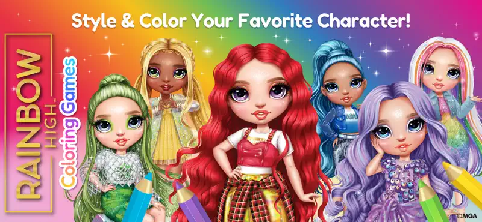

Built 0 → 1Rainbow High: Coloring Games
Bini Games / TEACH & DRAW LTD · 2025The title I am proudest of, and the one I owned end to end: concept, core loop, progression, monetisation and the GDD that the team built from. It landed in the Top 50 new kids' releases and pulled hundreds of thousands of downloads across iOS and Android almost entirely on organic traffic. With no meaningful UA budget behind it, the store page and the first ninety seconds of play had to do the marketing themselves, so most of my design effort went into making the very first colouring session feel generous and instantly readable to a child who cannot yet read.